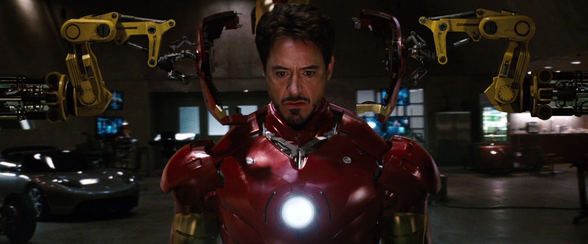

How this film was created
Iron Man is a 2008 American superhero film based on the Marvel Comics character of the same name. The first installment of the Marvel Cinematic Universe, it was directed by Jon Favreau from a screenplay by Mark Fergus and Hawk Ostby, and Art Marcum and Matt Holloway. The film follows Tony Stark (Robert Downey Jr.), an industrialist and master engineer who builds a powered exoskeleton after a life-threatening incident, and becomes the technologically advanced superhero Iron Man. The film had been in development since 1990 at Universal Pictures, 20th Century Fox, and New Line Cinema at various times, before Marvel Studios reacquired the rights in 2006. Marvel put the project in production as its first self-financed film, with Paramount Pictures as distributor. Favreau signed on as director, aiming for a naturalistic feel, and chose to shoot the film primarily in California, rejecting the East Coast setting of the comics to differentiate the film from numerous superhero films set in New York City-esque environments. Filming began in March 2007 and concluded in June. During filming, the actors were free to create their own dialogue because pre-production was focused on the story and action. Rubber and metal versions of the armor, created by Stan Winston's company, were mixed with computer-generated imagery to create the title character.
Plot
Tony Stark, who has inherited the defense contractor Stark Industries from his father, is in war-torn Afghanistan with his friend and military liaison Lieutenant Colonel James Rhodes, to demonstrate the new "Jericho" missile. After the demonstration, the convoy is ambushed and Stark is critically wounded by a rocket-propelled grenade used by the attackers: one of his company's own. He is captured and imprisoned in a cave by a terrorist group called the Ten Rings. Yinsen, a fellow captive who is a doctor, implants an electromagnet into Stark's chest to keep the shrapnel shards that wounded him from reaching his heart and killing him. Ten Rings leader Raza offers Stark freedom in exchange for building a Jericho missile for the group, but Tony and Yinsen know that Raza will not keep his word. Stark and Yinsen secretly build a small, powerful electric generator called an arc reactor to power Stark's electromagnet and a prototypical suit of powered armor to aid in their escape. Although they keep the suit hidden almost to completion, the Ten Rings discover their hostages' intentions and attack the workshop. Yinsen sacrifices himself to divert them while the suit is completed. The armored Stark battles his way out of the cave to find the dying Yinsen, then burns the Ten Rings' weapons in anger and flies away, crashing in the desert and destroying the suit. After being rescued by Rhodes, Stark returns home and announces that his company will no longer manufacture weapons. Obadiah Stane, his father's old partner and the company's manager, advises Stark that this may ruin Stark Industries and his father's legacy. In his home workshop, Stark builds a sleeker, more powerful version of his improvised armor suit as well as a more powerful arc reactor for his chest. Personal assistant Pepper Potts places the original reactor inside a small glass showcase. Though Stane requests details, a suspicious Stark decides to keep his work to himself. At a charity event held by Stark Industries, reporter Christine Everhart informs Stark that his company's weapons were recently delivered to the Ten Rings and are being used to attack Yinsen's home village, Gulmira. Stark then learns that Stane has been arms trafficking to criminals worldwide and is staging a coup to replace him as Stark Industries' CEO. Stark dons his new armor and flies to Afghanistan, where he saves the villagers. While flying home, Stark is shot at by two F-22 Raptor fighter jets. He reveals his secret identity to Rhodes over the phone in an attempt to end the attack. Meanwhile, the Ten Rings gather the pieces of Stark's prototype suit and meet with Stane, who subdues Raza and has the rest of the group killed. Stane has a massive new suit reverse engineered from the wreckage. Seeking to track his company's illegal shipments, Stark sends Potts to hack into its database. She discovers that Stane hired the Ten Rings to kill Stark, but the group reneged. Potts meets with Agent Phil Coulson of S.H.I.E.L.D., an intelligence agency, to inform him of Stane's activities. Stane's scientists cannot duplicate Stark's miniaturized arc reactor, so Stane ambushes Stark at his home and takes the one from his chest. Stark manages to get to his original reactor to replace it. Potts and several S.H.I.E.L.D. agents attempt to arrest Stane, but he dons his suit and attacks them. Stark fights Stane but is outmatched without his new reactor to run his suit at full capacity. The fight carries Stark and Stane to the top of the Stark Industries building, and Stark instructs Potts to overload the large arc reactor powering the building. This unleashes a massive electrical surge that causes Stane and his armor to fall into the exploding reactor, killing him. The next day, at a press conference, Stark defies suggestions from S.H.I.E.L.D. and publicly admits to being "Iron Man." In a post-credits scene, S.H.I.E.L.D. Director Nick Fury visits Stark at home, telling him that Iron Man is not "the only superhero in the world", and explaining that he wants to discuss the "Avenger Initiative".
